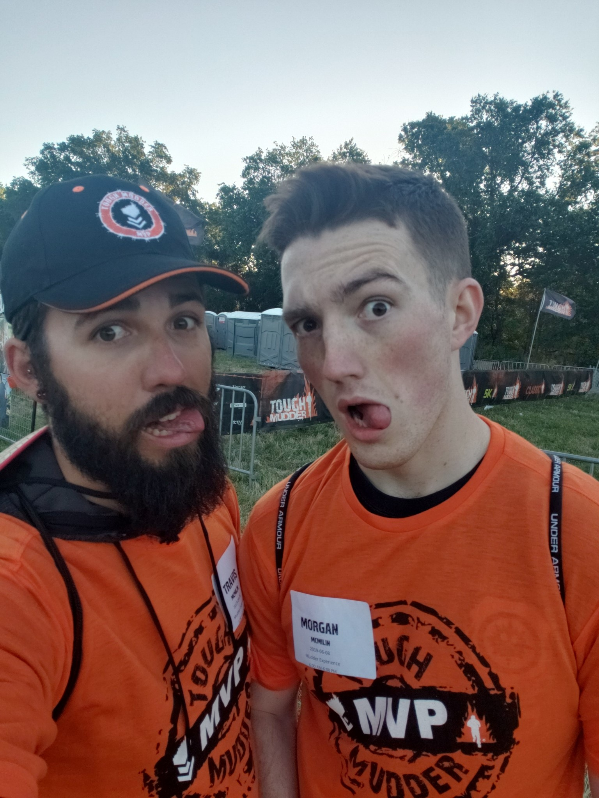

I don't know if any of this will be worth reading, but I'll try my best to make it spicy! I love to collect different coffee mugs and just started collected those POP figures. I haven't been able to play much, but I have so much fun playing golf, especially with friends or family. I plan on regularly streaming through Twitch soon, and want to start a Youtube channel once I have a dedicated space for it, but that'll just be on the side of whatever coding job I find myself in. I was in the US Army before moving to Sacramento, and although it was all good stuff, I wouldn't change a single thing. So far, I love this coding bootcamp, especially the fact that every one is super social.
I can't stand pizza with pineapple because, let's be real, fruit doesn't belong on pizza. Chipotle is that one food that I'm always in the mood for, and may have a slight addiction to coffee. Oh you know what, a Mimi's Santa Fe omelette is another thing I'm always in the mood for. Anyway, I'm ultimately looking to end up in a place in life where I can wake up and be excited to get to work, while being happy while doing. With that in mind, I'm hoping this bootcamp can help me achieve that.
Music is such a huge part of my life; I don't think there is ever a time I'm not listening to it. In terms of genres, anything that isn't country is good with me, but lately I've found myself listening to the soundtracks of both Man of Steel and Interstellar. If you haven't watched these movies, I highly recommend it. Hans Zimmer does an absolutely amazing job at bringing out these movies' true bueaty and turning them into the masterpieces they are.